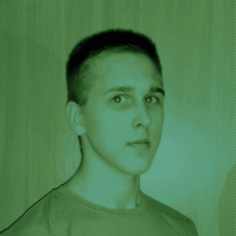
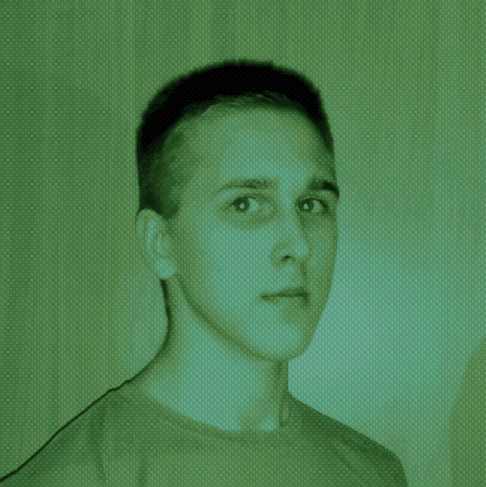

Born
Nikolay Zhdanov
21 February 2002 (age 18)
Barnaul, Russia
Other names
CHINGISKHAN1997, Aslan Murzin, ZdNn1
Hobbies
Linguistics, powerlifting, antropology, ancient history

Nikolay Zhdanov
21 February 2002 (age 18)
Barnaul, Russia
CHINGISKHAN1997, Aslan Murzin, ZdNn1
Linguistics, powerlifting, antropology, ancient history